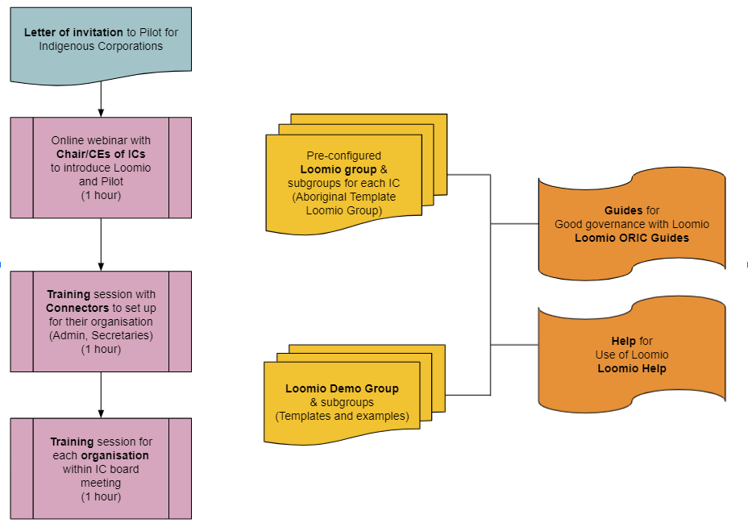

A guide for Aboriginal and Torres Strait Islander corporations using Loomio for good decision-making and accountable governance
This guide is intended for corporations in the ORIC–Loomio pilot program, but it may be of interest to anyone seeking help to use Loomio for good governance.
Good governance happens when directors understand their corporation's context and set up a system and processes to serve its purpose and meet their obligations under the law.
“It is participatory, consensus-oriented, accountable, transparent, responsive, effective and efficient, equitable and inclusive and follows the rule of law.” That's a description of good governance from the United Nations Economic and Social Commission for Asia and the Pacific.
Open communication is at its heart.
You can use Loomio to strengthen governance: collaborate beyond board meetings, include everyone in open, honest and respectful discussion, and document everything as you go. Then when directors do come together at the same time, they can ratify all the key decisions.
Loomio—and this guide to using it—will help your board to communicate well, make good decisions and be accountable.
Within this guide
- Loomio key concepts
- Guide for directors using Loomio
- Guide for connectors managing Loomio for their corporation
Sandpit
If you want to try out a Loomio group—start a thread, comment, create a proposal or poll—with no impact on your real Loomio group, you can create a temporary demo group. Think of it as a sandpit. Feel free to play around, respond to a thread or a poll, or create your own.
Templates
When you create a demonstration group (as above, in the 'sandpit') you'll see examples of threads you might create in your real group for the board of an Aboriginal and Torres Strait Islander corporation. You'll see how to use Loomio to:
- prepare for board meeting
- draft and approve minutes of a meeting
- assign a task to someone
- vote on a resolution
- empower a subcommittee to make recommendations or decisions.
Loomio is also building a new feature that will support you in common tasks like preparing for a board meeting. When that feature goes live, you won't have to create a new thread from scratch. You'll be able to create a thread from a template.
You are free to use the content of this guide under the Creative Commons Attribution 4.0 International license (CC BY-SA 4.0)
What is Loomio and how can it help?
Loomio is a collaborative working space, shaped for making decisions — to achieve outcomes in line with your purpose.
Key concepts
Group
A Loomio group is a safe place for your organisation to meet, discuss and make decisions about work.

Group home
Your group home page is the first place you see when you arrive. It contains a title, an image to represent the group, and some text to introduce the group: its purpose, the work you will do, and any other information to help members participate.
Subgroups
Subgroups are a space for a smaller subset of people to focus on a project or committee work.
Depending on the settings, the subgroup can be visible to the broader group, or for subgroup members' eyes only.
Thread
Threads are where you share information, discuss, and make decisions.

Threads are used for many purposes. In a board, you will use threads to prepare for a board meeting, discuss matters, share reports, ask questions, vote on resolutions, approve minutes, and so on. It's also where your group can develop a consensus or at least a shared understanding of issues important to you.
Threads keep everything about a topic in one place. Over time you’ll create a useful archive of your organisation’s discussions and decisions.
Proposal
One of the best things about Loomio is its range of tools for gaining a clear view of where your group stands on any matter. Each tool has a slightly different purpose. The most common one is a proposal.

A proposal is for converting a discussion into a clear, practical outcome. Someone suggests a course of action and invites everyone to respond. For example, you might ask group members to either:
- agree
- abstain or
- disagree.
Importantly, as well as selecting a response, everyone in the group has a chance to explain what prompted it. You can all see where everyone else stands on the matter, and why. And then, if you want, you can change your response.
As well as helping your group to convert discussions into outcomes, a proposal creates its own record of how the decision came about.
Other voting tools
A proposal is good for suggesting a particular path and gauging who wants to take it. But sometimes you might want group members to make a different kind of choice.
Loomio offers a range of other poll tools:
- Poll: to ask people which option/s they approve
- Check: think of it as asking everyone to (please) 'raise your hand if you…'
- Time poll: to find the best time for the group to do something
- Score poll: to ask people to express the strength of their preference for each option, on a numerical scale
- Dot vote: to ask people to express the strength of their preferences, with a constraint—a fixed number of ‘dots’ to allocate–you can put all your dots in one place or spread them out
- Ranked choice: to rank a subset of options—useful for elections when there are many candidates and few seats
The best way to learn what to use when is to have a go. Use your own Loomio group or create a demo group.
Governance onboarding to Loomio for Corporations
The following chart summarises the onboarding training, Loomio group set up and Guides made available to support Corporations as they get started with Loomio:

Letter of invitation A sample invitation letter to the ORIC Loomio Pilot programme and to join a first call via Zoom. Click here for the draft Letter of invitation.
Online webinar with the leaders of corporations This first session is with the Chairperson and/or Chief Executives of Corporations enquiring about joining the ORIC Loomio pilot, where we will introduce the pilot, Loomio and our intent to support good governance with digital tools.
- Show a demonstration of governance on Loomio
- Get everyone to join Loomio, post a comment and vote on a poll during the call
- Ask leader to identify an administrator or company secretary who we will invite as ‘Connectors’ to a practical training session to set up their board on Loomio
Outcomes sought:
- Understanding the value of Loomio to your Board
- Identification of areas for governance improvement for your Board and potential issues
- Build trust/permission/excitement for using Loomio to address the above
Training session with Connectors A practical hands-on training session for each board administrator to set up Loomio for your first board meeting.
Outcomes sought:
- Exposure to and hands-on experience in use of Loomio
- Confidence in using the tool independently for your next meeting
- Identification of any barriers or issues in using Loomio or addressing governance
Training for each organisation A one hour time slot to be scheduled within the next board meeting to give all directors the capability to use Loomio.
Outcomes sought:
- Building confidence as users of Loomio
- Building capability to interact with the tool to be able to do good governance
- Setting up your Loomio group for success and ease of use
Pre-configured Loomio group for each Corporation A Loomio group and subgroups set up for each Corporation on the decisions.oric.gov.au service, containing initial templated content to help the corporations get started with Loomio.
Loomio demo group Each Corporation will have a pre-loaded demo group, where they can see example content and templates for common board discussion and decision processes.
Guides An online book for ORIC Corporations, that may be printed to pdf. Includes Guides for directors, connectors and links to the Loomio Help book for key concepts. Includes guides for good governance practices on Loomio and questions directors should ask when approving financial reports.
Help Loomio Manual for all users including introducing Loomio key concepts in the first chapter. The Manual provides information about all Loomio features, to help people setting up and facilitating Loomio groups.
Guide for directors using Loomio
Loomio is a private and secure service for your board to talk about matters, make decisions and keep track of everything.
You can use it to prepare for meetings and to handle the administrative work of meeting notices, agendas, minutes. Importantly, you can also use Loomio to vote on resolutions. Using Loomio means that when you do meet as a board, you can focus on important things that can only happen when you're together.
This Loomio service is provided by the Office of Registrar of Indigenous Corporations (ORIC) as part of a project to strengthen governance. Your group will be in the following ORIC domain: decisions.oric.gov.au << (bookmark that address in your browser)
Although this service is provided by ORIC, no one from ORIC has access to your group. It's private for your board members and whoever else you invite.
Minimum requirements to access Loomio
Loomio works on standard hardware and software. There is no need to download any software or app but you do need:
- a computer, tablet or smartphone with a current internet browser (such as Chrome, Firefox, Safari),
- an email application (such as Outlook, Gmail, Protonmail)
- internet service via wifi (wireless network), ethernet (cable) or mobile data plan (3G or above)
Old browsers such as Microsoft Internet Explorer might not work.
If you have problems seeing Loomio on your device, please contact us via Loomio Support or email contact@loomio.org.
Read on for how to:
- sign-in to Loomio
- respond in a thread
- vote on a proposal or in a poll
We'll also share some:
- frequently asked questions (and answers)
- common problems (and how to fix them)
Create your path into Loomio
You will receive an email invitation to join your board's Loomio group. Joining is easy. You don’t need a password, and your computer will remember you (if you let it).
Respond to the email invitation
Your invitation to join a Loomio group will arrive in your email inbox. In the middle of the email is a button to Accept invitation. Use it! It will open a webpage where you can create an account on the service at decisions.oric.gov.au.
On your computer you will see a button to CONTINUE WITH EMAIL. Use that button and you will land at a page to create your Loomio user account:

Type in your name, so people in your group will recognise you.
Use the CREATE ACCOUNT button, bottom-right. You will then have an account on decisions.oric.gov.au.
Upload profile photo (Optional)
If you upload a picture of yourself, it will display next to all the comments you make. That makes it easy for other directors to see who said what. But if you prefer, you can choose to instead Use initials (the first letters of your first and last name).

If you do want to add a photo to your profile, select Upload new photo. Browse to a suitable photo file from your computer. (When it displays, it will be small, so a photo of your face is best.)

Once you select the photo you want, use the button marked Open to upload it.
Threads, comments and other responses
Loomio discussion 'threads' are where you will discuss corporation concerns and make governance decisions.
Generally you will have a thread for each large topic or matter. Your group page which list each thread, like this:

You will be invited to write a comment in a discussion thread.
Scroll the thread to read other people's comments until you come to the place where you can write your own comment.
Make sure that the Comment tab is highlighted and write in the space alongside your user profile image.
Write your comment and click POST COMMENT to have your say.

Vote in a Poll
You will be invited to vote in a Poll. Polls help your board make decisions, and are typically used to approve minutes, pass resolutions and find a time to meet.
The invitation will often arrive via email as below.
Click on the link in the message to go to Loomio, where you can read the Poll or Proposal along with any supporting documents, and Vote.
Here is an example of a typical Poll:

To vote
Click on the Option you wish to vote. (Optional: Leave a reason or comment about your vote.)
Click SUBMIT VOTE

Frequently asked questions for getting started
Q. Who sent the invitation or notifcation email?
A. The email has been sent by someone you know, likely the Chairperson, CEO or administrator of your board.
Q. Is it safe?
A. Yes, you have been invited to a private online space set up specifically for your board.
Q. How can I know it is safe?
A. Here are some checks you can do: Do you recognise the name of the person who has invited you? Do you recognise the name of your Corporation? Are you expecting an invitation?
Q. Do I have to sign in every time I use Loomio?
A. If this is your computer, your computer should 'remember' you and keep you signed in to Loomio. However you will need to sign in again if you reset your computer or sign into Loomio on a different computer or phone.
Q. Do I need a password?
A. No, you don’t need a password, however you can use one if you like. A password will help you sign in if you have trouble receiving email.
Troubleshooting
Problem: I can’t receive email
Solution: Your Loomio user account is linked to your preferred email address. If you cannot access your email, you will need to sign into Loomio with a password.
Contact Loomio support if you need a password set for you.
Problem: I need to receive my invitation via SMS text
Solution: Contact Loomio support so we can generate an SMS text for you. It will look something like:
Hi, this is Michael from Loomio. Click on the link below to go to our board page on Loomio. Follow the instructions to set up your user account and click ‘Sign in via email’. Reply to this text if any problem. Thanks!
https://decisions.oric.gov.au/
Guide for Connectors
This guide is for Connectors - people with administrator access to your Loomio group.
A connector is usually the board administrator for your Corporation, who will set up Loomio for your board and be the primary point of contact.
Purpose: To set up Loomio effectively for your board.
Initial objectives Our aim is to encourage directors to join and participate in your Loomio group. They should be easily able to:
- Sign in to Loomio ( decisions.oric.gov.au )
- Read and comment on threads
- Vote in polls and proposals
- See how your governance practices work in Loomio
Using this Guide
There are a series of steps to the guide. Work through these or navigate to a section using the table of contents. Reach out to Loomio support for further help if needed.
- Understanding directors capability to access online tool - do this first
- Step 1. Set up your board on Loomio
- Step 2. Set up your personal profile
- Step 3. Invite board members
- Step 4. Start a first thread
- Step 5. Start a first poll
- Step 6. Subgroups
- Why Loomio?
Self-assessment for board readiness
Good communication today requires Directors to be able to use a computer or smartphone connected to the internet; capable of sending and receiving email, browsing the web, viewing videos and reading electronic documents.
Success of using an online tool like Loomio to communicate with your board requires Directors to be familiar with basic apps such as email, internet browser, document and video viewers.
Here is a quick check list to review with each Director:
- An up-to-date computer or smart phone with email, internet browser and video viewer
- Connection to the internet via WIFI, ethernet cable or mobile data plan (3G or above)
Know how to :
- Send/Receive email, browse the internet and open links to go to web pages
- If Director is not comfortable using their computer or smart phone, is there a person in the organisation, friend of family member who can help them with these things?
Loomio works with all standard internet browsers such as Google Chrome, Microsoft Edge, Firefox and Apple Safari. Old unsupported browsers are not supported, such as Microsoft Internet Explorer.
Contact Loomio support to let us know if you have problems with Loomio on your device.
1. Set up your board on Loomio
Group settings
Your Loomio group is pre-configured to help you get started. As a Connector you have been given administration rights for the group. This means you can edit group settings.
Please review each of the following settings and change to suit your organization.
On your group home page, go to the Settings tab and click Edit group settings.
Group name: The name of your organization is the default. Do you want to change this?
Handle: A simplified label for your group that you can share with others, e.g. decisions.oric.gov.au/aboriginal-corporation.
Tip: Short names work best for your handle.
Cover image: Upload an image that represents your organization. (Replace the stock image.)
Logo: Upload your logo to appear alongside your group name when people visit your group.

Group Description: The group description is the first place people see when they arrive into your group. This helps new people as they join your group to understand the purpose of the group, what work you are going to do, and provide any other information that helps people as they participate.
A template description for your group is provided. You can edit or replace with your own text, upload or link to any relevant documents. A wide range of formatting tools are available to help you.
- Attach files: Use the paper clip icon to attach files from your computer. (Find this just below the group description box.)
- Insert link: Go to the internet page you want to link to, copy the link to your clipboard. Highlight the text that you want to link. Click Insert link and paste the link and click Apply.
Group Description Template
Here is an example of a group description.

Other Group settings
Privacy
Check your group privacy is set to Secret. Only invited people can find the group. All threads are private.

Permissions
As group administrator you can modify what members of your group can do. The initial permissions are set for the safety of your group while allowing members to use the main features of Loomio.

Category Tags
Use tags to make it easy to find threads of a certain type or topic. Tags can be applied when starting or editing a Thread, Poll or Proposal.
Your Loomio group is pre-configured with the following tags.
Administration, AGM, Board meeting, CEO Report, Guide, Finance, Legal, Members, Minutes, Planning, Policy, Reporting, Resolutions, Rule book, Special meetings, Strategy, Template.
Tags are visible under the Thread tab by clicking on tags.
The tag name shows the number of items that have been tagged.

Add tags when you start a new Thread, Poll or Proposal.

Add your own tags by clicking on the Add tag icon and New tag.

2. Set up your personal profile
Your personal profile will help members of your group easily identify you, and have confidence that the messages they receive from you actually come from you.
- Click on the menu icon (☰) at top left to open the sidebar menu.
- Click on your name at the top of the sidebar to open the user menu.
- Select Edit profile option.

Upload a profile photo
Your initials will be the default image associated with your profile. To upload your profile photo:
- Click on Change Picture on the profile page
- Select Upload new photo
Example:

Update your personal info
Check and update your profile on Loomio.
- Name
- Email address - this email receives your Loomio notifications
- Username - people can use your username to notify you with @mention in threads
- Introduction - a few lines to let others in your group know more about you
- Location - so people know where you are
Note that your email address is not displayed to other users. Your email address can only be seen by Administrators of your group in certain circumstances.
Example:

3. Invite board members
Now we have prepared our Loomio group, let’s invite directors.
On your group home page, go to the Members tab.
On the Members page you can see who are the members of your Loomio group. You can also easily see when a member joined your group, and any invitations that have not yet been accepted.
You can remind people you have invited with Resend invitation, give anyone administrator level access with Make admin and add a person’s title with Set title such as Chairperson.
Example:

Invite people
You can invite people to join the Loomio group either by sending a message to their email address via Loomio, or Share an invitation link via your email service or in a newsletter.
- Click Invite
- Type or copy/paste the email addresses of the directors you want to invite
You can add an optional message to encourage people to click the invitation button:
Example:
Hi, please join our private Loomio group. We use this space to notify directors of meetings, prepare and vote on resolutions, discuss topics between meetings, and to record decisions in a searchable archive.
Tip: If you have a lot of people to invite, you can copy up to 100 email addresses at a time from a list, such as from a spreadsheet column.
Example:

4. Start a first thread
Start a thread to help directors become familiar with using Loomio. We can use this thread to introduce Loomio to directors, and invite them to post a comment.
Objective: Let’s get each director to post a comment so we know that directors are connected.
- On your group home page, go to the Threads tab.
- Click New Thread.

Thread
Threads are where your group can discuss a topic, exchange information and make decisions together. Threads keep everything about a topic in the same place. Over time you’ll create a useful archive of your group’s discussions and decisions.
Tip: Use a Loomio thread instead of writing an email.
All the information, discussion and replies are in one place, where you can see who has read the thread, and nudge people if needed; avoiding email chain confusion.
Group - Select the group or subgroup you want to post the thread in. When started, your thread will be visible to the members of your group or subgroup.
You can also select Invite-only thread (no group) if you want to have a private discussion with one or more people, or if you want to draft a thread before posting in your group.
Title - Give your thread a title; this is usually announcing a topic or asking a question. Keep it short and to the point. A thread title is like the subject line in an email.
Notify - You can choose to notify people by sending them an email of the thread via Loomio. You can select any group or subgroup of people.
- Click on the group name to see individual people to notify.
- Click the X beside a person’s name to remove a person from the notification list.
Tag - Choose a tag for your thread to make it easy to find threads of a certain type or topic, or create a new tag.
First thread suggestion

5. Start a first Poll
Let’s start a poll to help directors become familiar with using Loomio. We use Polls and Proposal to make decisions and request a response.
Objective: Let's get everyone to vote in a poll, so they're ready when we get to work.
You start a Poll or Proposal from within a Thread.
- Go to the thread that you wish to start your poll and click on the Poll tab.
- Select the type of poll you want to use. Let’s start with Check.

Start Check
A check is a tool with many possible uses but only 2 responses: a tick (✔) or an x mark (✘). Participants will use the tick (✔) to say yes and the x mark (✘) to say no or unsure.
Use it to engage people with an offer, like an RSVP: "I'm coming to the event", "I'll join the subcommittee" or "I have completed my actions".
A day before the check closes, Loomio will remind people who have not participated.
Title - Give your poll a title. Keep it short and to the point.
Tags - Select a tag that will help people easily find this poll when searching.
Details - Explain what you are asking people to do and how to participate.
Options - Select the poll voting options. Each poll type provides different options.
Closing date and time - Select the closing date and time for your poll. Give sufficient time for people to vote. If necessary, you can close the poll early or extend the closing time.
Reminder - 24 hours before the poll closes Loomio can send an automatic reminder. Choose if you want to enable this and who to send to. The default option is Undecided voters.
Who can vote? - You can decide who is voting; anyone in your group or only the people you specifically invite.
The default settings is everyone in the group can see who has voted. However you can select anonymous voting if you want to keep the identity of voters secret.
*Tip: Anonymous voting is useful for elections or if you think voters might be influenced by how others vote.
Check poll suggestion

Invite to vote - You can choose to invite people by sending them an email of the poll via Loomio. You can select any group or subgroup of people.
- Click on the group name to see individual people to notify.
- Click the X beside a person’s name to remove a person from the notification list.
Voting
Here is what people will see when responding to a Poll request to vote:

6. Subgroups
Do you need a subgroup? Subgroups help you organize the work of particular groups of people; for example a subcommittee, working group or project team. You may also set up a subgroup for communicating with membership.
Subgroups work just like groups and are located within your "parent" group or organization.
Most of the features and settings are the same as in your parent group, and include the ability to allow members of the parent group to see, but not participate in, threads and polls in the subgroup. This is helpful if you want to offer transparency of discussions and decisions to members of the parent group.
A person can be a member of your subgroup and not of your parent group.
Typical subgroups for Indigenous Corporations include:
- Financial subcommittee
- Health & Safety
- Risks & Audits
- Industry-specific subgroup such as Property

Set up a subgroup
On your group home page, go to the Subgroups tab and click New Subgroup.
Follow a similar process as in Step 1 to set up your subgroup.

Permissions
To allow members of your parent group see threads in the subgroup:
On your subgroup home page, go to the Settings tab and click Edit group settings.
Change permissions by ticking or un-ticking the check box.

Why Loomio?
Loomio is an online place for the board to have discussions and make decisions together:
- Accessible, transparent and inclusive; stay connected wherever you have internet access
- Build consensus
- A safe place for all communications, information, deliberations, decisions and records of the the board
- Prepare for meetings and follow up with minutes and actions
Push admin tasks onto Loomio to free up meeting time for discussions that matter:
- Arrive at meetings prepared and in context
- Push topics that require further discussion and info back into Loomio
- Record minutes and progress actions
It is an opportunity to align and integrate your governance and cultural practices with Loomio.
Introducing a new online tool to your organisation
This guide is to help you consider how to introduce Loomio to your organisation and make best use of the tools available.
Introducing people to a new technology doesn't just happen - it requires some intentional work on the part of everyone to build new patterns of work and behaviour, while respecting the different challenges everyone has in fulfilling their role.
There are real benefits of using a digital tool such as Loomio to enhance your collaborative work together.
Let's explore some key questions below
- Why do we need an online place for discussion and decisions?
- How secure is the information?
- How will you structure Loomio to suit your organisation?
- How do our current work processes adapt to our online practices?
- How quickly do you expect each other to respond?
- What protocols do you want to establish in relation to notifying individual people?
- When is it best to continue a thread and when to start a new one?
- How do you know what kind of poll to use?
- When should you use a proposal instead of a poll?
- Does the CATSI Act allow us to use Loomio as our statutory obligation?
Why do we need an online place for discussion and decisions?
Good governance exists where an organisation has systems and processes in place that are appropriate to its circumstances, and which enable the organisation to pursue its purpose effectively and meet its obligations under the law.
“It is participatory, consensus-oriented, accountable, transparent, responsive, effective and efficient, equitable and inclusive and follows the rule of law.”
Underpinning all of these principles is the need for good communication.
Many directors and boards of Indigenous Corporations experience challenges:
- Getting directors together in person
- Difficulty for directors to join online video meetings
- Unfamiliarity with online technology
- In remote locations with poor internet connectivity
- Governance practices still forming
- Dealing with a high volume of transactional business (e.g. approving land and financial transactions)
Loomio offers an opportunity to strengthen governance, to extend collaboration beyond board meetings, to include everyone in open, honest and respectful discussion while documenting everything.
How secure is the information?
Your group is private, and you are in control of who you invite to the group, and therefore who has access to information in the group.
Who can access the information? Only people who are invited to the group. Click on the Members tab to see members of your group.
Can ORIC access the information? No. Named Loomio staff members (Michael and Rahul) may be present in your group to help you with set up. They will leave the group when established or you can remove them from the group at any time.
Can I invite an adviser or accountant into a particular discussion? Yes. You can invite an external person to contribute to a particular Loomio thread discussion.
How will you structure Loomio to suit your organisation?
A Loomio group comprises a 'parent group' and any number of 'subgroups'.
Subgroups help you organize the work of particular groups of people; for example a subcommittee, working group or project team. You may also set up a subgroup for communicating with membership.
Subgroups work just like groups. Most of the features and settings of subgroups are the same as in your parent group, and include the ability to allow members of the parent group to see, but not participate in, threads and polls in the subgroup. This is helpful if you want to offer transparency of discussions and decisions to members of the parent group.
A person can be a member of your subgroup and not of your parent group.
Typical subgroups for Indigenous Corporations include:
- Financial subcommittee
- Health & Safety
- Risks & Audits
- An industry-specific subgroup, such as "Property"
- Membership

You may also want to set up a subgroup to share information and engage with Corporation membership.
Always review subgroup privacy and permissions are set appropriate for the work of the subgroup.
How do our current work processes adapt to our online practices?
As a discussion and decision-making tool, Loomio is flexible and can be configured to suit your current work processes.
For example, typical work processes of a board include:
Preparing for the next board meeting
Board work process:
- follow up and talk to directors about actions
- ensure the focus of the meeting is about the most important things
- prepare documents and materials
- actions from previous meeting
- notify directors and send board papers
- agree a date/time for the next meeting
On Loomio: Use a Loomio Thread to prepare for your board meeting:
- invite directors to comment on meeting focus
- list actions and invite directors to comment on their actions
- directors comment in thread and attach files and link to docs and other resources

Notify Directors of next board meeting
Board work process:
- Notify directors about the next meeting.
- Attach meeting agenda.
- Attach board papers.
On Loomio: Use a Loomio Thread to notify directors, send agenda and attach board papers:
- Prepare your thread context as the formal notification to be sent to directors
- Attach the meeting agenda document
- Attach CEO report and financial statements
- Invite directors to the thread

Administrative governance practices
Board work process:
- Approve meeting minutes, along with matters arising.
- Pass Chief Executive, Finance and Health & Safety reports.
- Prepare resolutions.
- Investor/stakeholder reports.
On Loomio: Use Loomio Polls and Proposals within the meeting thread:
- To approve minutes and note matters arising before the meeting. (Poll)
- To pass CEO and Finance reports. (Proposal)
- To prepare resolutions in advance of meeting and record votes and outcome. (Proposal)
- To approve reports to be published. (Proposal)

Out of session decision
Board work process:
- When there is insufficient time or information available during your meeting, and you need to continue the discussion about a topic and make a decision before the next board meeting.
- Make administrative decisions. (For example, approving annual insurance renewals.)
- Build consent for strategic direction. (This may be triggered by external event or a director's particular interest.)
On Loomio: Use a Loomio Thread in your Loomio group to start an out-of-session discussion and a Loomio Proposal within the thread to make a decision.
- Give the thread a title that represents the topic, and provide background information and a question to get the discussion started. Attach files or link to relevant information online.
- Start a Proposal within the thread to make a decision
- Start a thread to open discussion about a strategic topic, and invite directors to contribute their thoughts, questions and comments. Attach files or link to relevant information online.

(A Loomio Proposal is a particular type of Poll that asks people to agree to a course of action and records the decision made. It let's everyone know that it is time to make a decision, and is also useful to clarify disagreement and help resolve an issue.)
Statutory requirements:
Board work process:
- Annual General Meeting (AGM) reporting
- Tax and annual financial statements
- ORIC reporting
On Loomio:
- Use Loomio Threads to prepare the information necessary to meet statutory requirements, and attach appropriate documents. Invite directors to question and respond to the information.
- Use Loomio Proposal to approve documents for filing. Directors can agree to approve or disagree to seek more information. When satisfied directors can change their vote to approve.
- When filed, state an Outcome of the proposal, along with approved report and statements, so that everyone knows the documents have been filed.

Finding a meeting date
Use a Loomio Time Poll to find the next meeting date.
How quickly do you expect each other to respond?
Loomio is like email in that you can respond at a time that suits you. However everyone has different work habits, and taking too long to respond is likely to be frustrating for others.
In the early days of using Loomio, it really helps if everyone responds as soon as they can with a comment, vote or reaction.
On the other hand, when posting a thread or comment don't expect everyone to respond immediately. Give people time to read and digest the information - particularly on complex or important topics.
If people are not responding, you can prompt them through Loomio by sending a reminder or with a comment using @mention.
Use Polls and Proposals so people can see that something is happening, and that now is the time to have their say.
If some people are still not responding, raise a discussion at your next board meeting and seek agreement on the importance of good communication and commitment to timely response.
What protocols do you want to establish in relation to notifying individual people?
There are many places within Loomio that you can notify people including:
- Invite to a Thread
- Invite to a Poll or Proposal
- @mention a specific person within a comment
When you notify a person, you are sending them an email. So to avoid overloading their inbox, it's usually best to only notify people when something important is happening, or if you need to get their attention.
If you are setting up a Thread to notify directors about the next meeting, it may include several Polls and Proposals. Rather than sending notifications to every event, it is usually sufficient to notify people once about the Thread, and ask them to read the information and vote in any Polls or Proposals.
It is a advisable to have a quick discussion with your group to establish a protocol that works for them, so they receive the notifications they need and are not overwhelmed with too many.
When is it best to continue a thread and when to start a new one?
Loomio Threads usually focus on a particular topic. As the discussion progresses on the topic, the thread continues until it reaches an outcome.
If a new topic is introduced during your discussion in the thread, you may wish to start a new thread. In the new thread, you can add links to the old thread and even to specific comments, making reference to the previous discussion.
There are tools within Loomio that enable you to copy, edit and move comments to another thread.
Here are some common types of threads in governance:
- Holding all the information about a particular meeting
- Reports (e.g. Chief Executive or Financial subcommittee reports)
- Preparing and agreeing a Resolution
- Explore an important question
- Prepare for an event, such as a members meeting
- Collaborate on a policy document
How do you know what kind of poll to use?
There are several Loomio Polls and they have a wide application. You will likely find the following Polls valuable for Board use.
Check Poll
A Check is a tool with many possible uses but only 2 responses: a tick (✔) or an x mark (✘). Participants will use the tick (✔) to say yes and the x mark (✘) to say no or unsure.
Help directors get ready for your next meeting with Loomio Check Poll.
Checking in with directors to ensure they're prepared and have all the information they need will save a lot of blank looks and confusion during a meeting, and save you precious meeting time.
Add Check Poll image
Poll
The simple Poll can be useful for approving minutes of a directors meeting.
If the minutes are in a file (e.g. a Word document), attach the file to the Poll. In the Poll description, ask directors to vote to Accept or Review if they see anything they would like to discuss.
Set Accept and Review as the Poll options.

Time Poll
Use Loomio Time Poll to find the best time to meet and ask directors to respond. It will enable them to also see other's availability and juggle their calendars if they can.

When should you use a proposal instead of a poll?
Proposals are a great way to make a decision with your board. For example; approving a financial report, passing a resolution or making an out of session decision.
Here are a few examples of how Proposals are used to make decisions in a board:
- Resolution to approve a funding application
- Resolution to approve new terms of lease
- Approve annual financial statements
- Form a subcommittee
- Approve statement to shareholders
- Approve strategic plan
- Inviting a guest to a board meeting
- Approving CEO hire
- Accept insurance quotation
Does the CATSI Act allow us to use Loomio as our statutory obligation?
Yes. Loomio enables documented discussion and decisions in one place.
Whereas some Corporations try to make decisions via email, which can be scattered and difficult to track.
Can we run an out of session resolution?
Yes. If you circulate a decision outside of a formal meeting it requires 100% directors to agree to it for the resolution to pass.
Exception: If you delegate a subcommittee to make a decision and report back to the board.
Approving financial reports - what directors should consider
Directors do need to remember that they are not expected to be experts in financial reporting requirements. Nevertheless, a director’s duty is to ensure:
- Appropriate expertise is applied;
- Due process is sound;
- Essential elements of the process are scrutinised and tested by directors.
- Legislative responsibilities are met.
This will lead to a director’s confidence in the integrity of the outputs of the financial and management systems.
The following is a list of questions that directors could consider before approving financial statements, where relevant. This list does not attempt to examine all areas that may be ‘critical’ to every organisation as each organisation has its own unique critical areas.
It is envisaged that these questions would be among those posed by the audit committee, and that the answers would be obtained from management.
Also see the companion guide for common questions to ask about financial statements.
Overview
1. Do the financial statements make sense and present realistically the results, cash flows and state of affairs of the company?
It is important to look for what is expected – if it isn't present, the question “why?” should be asked. The better a director understand their business the easier it becomes for them to understand the financial statements.
Many director's questions will involve the timing of when information needs to be recorded in the accounting system and if the numbers recorded are appropriate.
Assets
The major concern in this area is whether assets are recorded in the financial statements at an appropriate amount: that is, not exceeding their recoverable amount.
2. Are any asset values too high? Has the value been impaired and must be reduced?
Organisations are not allowed to record an asset at a value materially higher than its recoverable amount. The Recoverable amount of an asset is the higher of its fair value less costs to sell and its value in use (this involves a future cash flow estimation).
3. Does the organisation revalue any of its assets?
If yes, when was the last time an independent valuation was conducted? If an independent valuation is not carried out, how has management determined that the book value of those assets is not more than the recoverable amount?
Once an organisation commences revaluing its assets it must continue to assess their valuation every year. An Independent valuation is not required. If the valuation is determined internally (usually by management) it is referred to as a directors’ valuation. Businesses would generally have a financial policy outlining if and when an independent valuation should be sought.
When an organisation commences the revaluation process,it must revalue all assets within a class: for example land would be a class of assets, and an organisation cannot revalue one parcel of land and ignore another.
4. Do any non-current assets need to be recorded in the current asset section as a ‘non-current asset held for sale’?
Non-current assets such as land should be reclassified as a current asset if it is available for sale and the recoverable amount is material to the organisation.
5. Is the asset register up-to-date? Have fixed assets been depreciated appropriately?
Fixed assets (plant and equipment, furniture and fittings,buildings, motor vehicles, computers, etc.) all need to be systematically depreciated over their useful life. Is there a depreciation policy and are assets depreciated accordingly?
6. Do all bank balances reconcile to the bank statements?
This is to ensure accuracy and completeness.
7. What steps have been taken to ensure that inventories are recorded at the lower cost and net realisable value?
The rule for carrying inventory on the balance sheet isto value the item at the lower of cost or its net realisable value. However for NFPs that distribute their inventory free of charge, inventory at cost can be carried on the balance sheet despite the realisable amount being $0.
8. What physical checks have been made to confirm inventories exist?
Despite businesses using perpetual inventory systems,it is still important to conduct a stocktake to ensure the accuracy of the system.
9. What steps have been taken to ensure that the book value of receivables is recoverable in full?
The organisation must assess if it thinks any of the receivables owing to the organisation are not likely to be collected. If this is the case the bad debts need to be written-off so that receivables are not overvalued on the balance sheet.
Liabilities
The major concern in this area is whether all liabilities of the organisation are included in the financial statements.
10. How has it been determined that all creditors have been included in the financial statements?
The organisation needs to ensure all invoices have been recorded in the accounting system at year end so that there is a clear indication of payables owing.
11. How has it been determined that the level of provisions is adequate?
Provisions are an estimate and can therefore be underestimated. It’s important to ensure that the organisation is comfortable that the amount being reported is high enough.
12. When does the organisation start to accrue long service leave for its employees? Is the current practice/policy considered to be appropriate?
This is a big issue for not-for-profit organisations that are heavily funded through grants. Employee costs need to be fully acquitted against grants in the year of employment, not 5/7/10 years later.
13. Does the organisation have any grant income that spans more than one financial year or the grant income has not been fully justified during the financial year?
Whether grant income unspent or received in advance at balance date is deferred or treated as a liability on the balance sheet depends on the terms and conditions of the grant received. Where the grants are reciprocal and there are enforceable obligations the amount received in advance or unspent is usually recognised as a liability on the balance sheet.
Where such terms and conditions do not exist no liability is recognised and the full amount is recognised as revenue when control of the funds is obtained.
14. Does the organisation have any operating leases?
Although notes are included in the financial statements that explain operating leases exist and when payments are required, they do not appear on the face of the balance sheet.
This means the asset value and the liability contractare not recorded. Hence, when the asset coverage of the liabilities is assessed the calculation will ignore any operating leases.
15. Does the organisation have any contingent liabilities?
This is not only necessary to record as a note to the financial statements but also for risk management purposes.
16. Have the assets and liabilities been correctly classified between the current and noncurrent sections on the balance sheet?
The Centro case has highlighted how important it is to make sure this classification is correct.
Going concern
Before signing financial statements, directors must be satisfied that the organisation can meet its debts as and when they fall due:
17. What coverage exists between the asset values and the level of liabilities? How liquid are the assets?
It is important to understand what level of solvency risk exists for the organisation both from a 12 month perspective and overall. This depends on the level of coverage the organisation has between its assets and liabilities and how easily the assets can be converted to cash if required.
18. Has a detailed cash flow forecast for the following year been prepared and reviewed by senior management?
The cash flow forecast provides the picture of what is expected to happen with the organisation's cash across the following 12 months. It will highlight cash flow issues in advance so that they can be addressed.
19. What are the major assumptions underlying the cash flow forecast and are all loan repayments and capital commitments included?
It’s important to be comfortable with the underlying assumptions used and that all cash requirements are included on the forecast (that is, not just a cash projection of revenue and expenses).
20. What other issues are relevant in determining that the company can pay its debts as and when they fall due, particularly during the next twelve months?
The following subset of questions should be considered:
- Liquidity of the asset base. Can any assets be sold if required?
- Is the organisation able to renegotiate milestone payment within funding agreements?
- How are accounts receivables and accounts payable being managed?
- Is the organisation in a position to take out a loan or does the organisation have an overdraft facility inplace? It’s always easier to organise these facilities when they are not really needed than to wait until they are needed.
Compliance with accounting standards and the external auditors
Accounting standards have the force of the law and must be followed when preparing general purpose financial statements.
21. What are the key accounting standards that affect the organisation and how does management ensure compliance with these standards?
Accounting standards change regularly. It’s important to be aware of any standards that have changed during the year and if the changes will have a material impact on the way the organisation presents its financial information.
22. Have the auditors expressed any concerns about how an accounting standard has been interpreted?
Accounting is all about interpretation of accounting rules. An organisation’s accountant may have a different view to its auditor’s interpretation.
23. Will the auditors provide an unqualified opinion on their audit report?
A qualified opinion may not just be an interpretation issue, but may be due to other more serious concerns which will need to be investigated. It is recommended that the board or the audit committee have an opportunity to meet with the auditors without management present to have a free discussion about any issues that the board or the auditors want to raise.
General
This section deals with other areas of enquiry a prudent person would make before signing financial statements, and to ensure the substance (over the form) of the financial statements prevails.
24. Have all the necessary notes to the financial statements been correctly recorded? Do the figures in the notes match the figures on the face of the statements?
The accounting standards also outline the information required to be included in the notes to the statements. Have these requirements been met?
25. Are there any matters included in the financial statements that could be viewed as misleading?
The board of directors are accountable to the members of the organisation. Full disclosure and transparency is always the best approach.
26. Are any of the directors aware of anything, from their personal knowledge or warnings from outside sources, which should be considered before signing?
Board information shouldn’t just come from management. Director knowledge and understanding should involve listening to the external environment: for example are there any complaints from suppliers that invoices are not paid on time?
27. Have the year-end financial statements been finalised by internal staff, an external accounting firm or assistance from the auditors?
Many small NFP organisations rely on external assistance in finalising their year-end financial statements. Be aware of what assistance may be required by the finance team at year end either due to lack of internal resources or the expertise required.
28. How does management ensure that there have been no major breakdowns in internal controls that may have a material effect on the financial statements,either now or in the future?
The internal control system is an important part of protecting an organisation, including the accuracy of the financial data. Many not-for-profit organisations are not large enough to employ internal auditors, whose role it is to review and improve this system. It’s important to be satisfied that the organisation has appropriate measures in place to review and improve these controls. This may involve using an external accounting firm to audit certain processes within the organisation on a rotating basis. Also the organisation should ensure it has process and procedures manuals in place and that they are followed and reviewed regularly.
Questioning Financial statements - Questions directors could ask
This guide includes an example of a financial statements, along with common questions directors should consider.
Also see the more detailed companion guide:
Financial Statements
You will typically receive the following set of accounts as part of a Board meeting.
- Balance Sheet
- Profit & Loss
- Depreciation Schedule See below for examples of these financial statements.
There are some key things as a Board member you need to keep an eye on...
Typical direct questions:
-
What explains the variances between the budget and actuals? Is this a good answer?
-
Is our balance sheet sustainable? *In other words, are we maintain an appropriate amount of expense control relative to income? *
-
Have we captured all our assets and valued them? How is this kept up to date?
Broader questions directors should have confidence in:
-
If we had an audit, would we receive a clean opinion?
-
What is our relationship with our accounting firm - or do we need one if we don't have one?
-
Why do we close the books and produce the financial statements on X workday each month and is that OK?
-
How can we become more accurate in our cashflow forecasting?
-
What are the best metrics for measuring our profitability and productivity?
-
If we are ever in challenging times, where can we tighten our belts?
-
What backup/BCP plans are in place in case key people in the company are unavailable to carry out their duties?
-
If this were our business we're running, what would we do differently?
Do you need a Finance Subcommittee?
Consider:
-
Is our organisation so complex that managing finances becomes difficult to understand without understanding the complex details?
-
Is our cashflow always under consideration? For example, if you are a startup and your cash runway only extends a few months and small changes in financial position have large strategic implications.
-
Are you a large entity? I.e if you are managing a large quantity of money - ensuring good oversight is critical.
-
Do you have lots of compliance and accountability responsibilities to adhere to? How are you ensuring that the company/org is meeting requirements?
Balance Sheet

Profit & Loss

Depreciation Schedule

Invitation letter to ORIC Corporations
To: Leaders and directors of Aboriginal and Torre Strait Islander Corporations
You are invited to join the ORIC Loomio Pilot programme.
Background
Boards are experiencing many challenges to effectively govern their Corporation, such as:
- Getting directors together in-person for meetings
- Unfamiliarity with the use of online tools
- Located remotely where there is poor internet connectivity
- Unsure of governance practices, or they are still forming
- Differing levels of engagement and understanding in the board
- Trying to tackle a high volume of work in time constrained environment
- Increasing regulatory reporting pressures and member/stakeholder
We would like to help you develop good governance using digital communication tools and have initiated a Pilot programme.

Loomio ORIC Pilot
Loomio is an online tool for discussion and decision-making that can help you strengthen governance.
We have set up a special service on Loomio, along with training and support, at no cost to qualifying organisations during the Pilot.
We expect the project to run for approximately 12 months, until the end of April 2022.
We have great hopes for the project. We anticipate that using Loomio will:
- save you time—as a channel for the administrative business of directors’ meetings (eg sharing and approving the minutes)
- improve corporation decision-making—as a tool designed to facilitate discussion and decision-making
- increase transparency and accountability to members—as a conduit for key questions and decisions to members
Want to learn more?
We run regular online webinar sessions for your Chairperson and/or Chief Executive to learn more about how Loomio can help governance for your Corporation.
RSVP by registering your interest with Catherine Styles at ORIC.
Select and book your preferred webinar session:
- TBA
The session is 1 hour duration, via Zoom video call at the following times:
- 9am AWST
- 10.30am ACST
- 11am AEST
- 1pm New Zealand
Getting started with Loomio
When you are ready to get started; please identify a person familiar with the IT and technology of your organisation, and the person who takes care of board administration. Send us their name and email addresses (it's ok if they are the same person).
We will then set up a Loomio group for your Corporation and get in touch to arrange training and onboarding, and book a timeslot in your next board meeting to introduce Loomio to directors.
We ask you to spend 10 minutes responding to a baseline survey about your corporation’s current governance.
And we expect you to actively use Loomio tools for your board decision-making.
If you have a question or concern, contact either your trained administrator or Loomio for support.
Data sovereignty
Aboriginal and Torres Strait Islander corporations participating in this programme will have sovereignty over their data. ORIC will have access to metrics about their use of Loomio, and any quantitative and qualitative data that directors provide as part of evaluating their own governance and the Loomio service. ORIC will have no access to any substantive data about corporations’ deliberations or decisions.
Loomio takes good care in relation to your privacy, and has set up a private service for this pilot on the Amazon Web Services (AWS) data centre in Sydney, Australia.
Questions?
Please ask :-)
Warm regards, Cath, Michael, Lisa and Rahul
Contact:
- Catherine Styles, catherine.styles@oric.gov.au
- Michael Elwood-Smith, michael@loomio.org